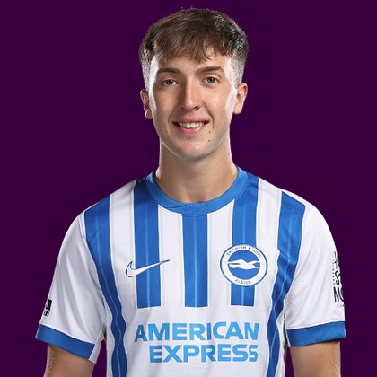

PITCHKEEP
Premier League ranks
Player File · MID BHA · Premier #74

Jack Hinshelwood
MID · Brighton · age 21 · £6.0m
2025/26 Premier League
| Year | Starts | Min | G | A | xG | xA | CS | GC | Bonus | YC | Sleeper | FPL |
|---|---|---|---|---|---|---|---|---|---|---|---|---|
| 2025/26 | 20 | 1736 | 4 | 5 | 4.94 | 2.34 | 7 | 23 | 2 | 0 | 100.0 | 91 |
Plus
- 100.0 Sleeper BPL 2025 points (Pitch #136).
- Age 21. The Athletic-style youth boards have a hook if the minutes hold.
- Consensus 67.0 vs Sleeper #136 - the industry still believes more than 2025/26 counted.
Minus
- Board spread 54–141 (RotoWire GW1 to FPL 2025/26 Points).
PitchKeep Take · The Premier
Jack Hinshelwood is a midfielder for Brighton, age 21, £6.0m. The Premier ranks him 74th overall by splitting Sleeper BPL 2025 (#136, 100.0 points) with the consensus of 3 other boards (67.0). The industry still has him 69 spots ahead of the 2025/26 Sleeper count. The Premier pays that reputation something, not everything. Brand does not outrun a down year, and a down year does not erase a player Brighton still builds around.
The 2025/26 Premier League line is 20 starts and 1736 minutes, 4 goals and 5 assists, 18 tackles and 35 CBI. Official FPL scored it at 91 points (3.4 per match) with 2 bonus. Sleeper's table turned the same counting stats into 100.0. Midfielders get 9 a goal, 6 an assist, and 1 a clean sheet, plus a full tackle/CBI stream. That is why a six who plays every week can outrank a ten-goal winger who sits.
Underlying: 4.94 xG, 2.34 xA, 7.28 xGI and 2.7 above expected assists. Role at Brighton is the 2026/27 question sitting under the 2025/26 number. 20 starts is a starter. Anything under 25 starts is a rotation warning we already priced. Minutes are the skill that survives a finishing regression. The friendliest board is RotoWire GW1 at 54; the coldest is FPL 2025/26 Points at 141.
Market: £6.0m, 10 boards on the file. That is leftover money for a Premier-ranked name. If the minutes hold, this board already voted. FPL's own EP-next is 2.1. ICT 94.8.
Instruction: deep-league starter, shallow-league watchlist. The 2025/26 line got him onto the 400. A role change gets him off it. Watch minutes, not vibes. Nearby on The Premier: James Garner, Jordan Pickford, Alex Iwobi. Versus The Pitch (Sleeper-only #136), the hybrid moves him up to #74. That move is the third list doing its job.
Age 21 is the other half of a hybrid. The 2025/26 counting line is one season. The Athletic-style youth lean on this board exists specifically so a Brighton kid does not get stuck behind a 32-year-old who had a nice bonus year. Sleeper still has to see the minutes. 20 starts is the beginning of a case, not the end of one.
How to use the file: The Pitch is the Sleeper-only 400 (he is #136 there). The Premier is the 50/50 with every other board we track. Attack, Midfield, Defence, and Keepers re-rank the same Sleeper table by position. BK Value on this page follows The Premier when you are on the hybrid calculator and The Pitch when you are on the Sleeper calculator. Same curve either way - 12,000 at 1.01. Unranked sources are skipped, never treated as 999, which is why a player missing from Yahoo's XI is not secretly ranked 400th.
Sleeper vs FPL
Same 2025/26 line, two scoring tables
Board graph
Spread 54–141 · 10 sources
Tape · 2025/26 Premier League
Jack Hinshelwood Own Goal | Aston Villal vs Brighton 1-0 | Highlights - Goals | Premier League 2026
Every Board
Spread 54–141 · 10 sources
| Source | Rank |
|---|---|
| RotoWire GW1 | 54 |
| FPL xGI | 60 |
| RotoWire FPL 400 | 63 |
| FPL Price Board | 72 |
| RotoWire Fantrax / Sleeper 400 | 84 |
| FPL Form | 124 |
| FPL EP Next | 133 |
| Sleeper BPL 2025 | 136 |
| FPL ICT Index | 140 |
| FPL 2025/26 Points | 141 |
All players · The Premier · The Pitch · PK News · Calculator